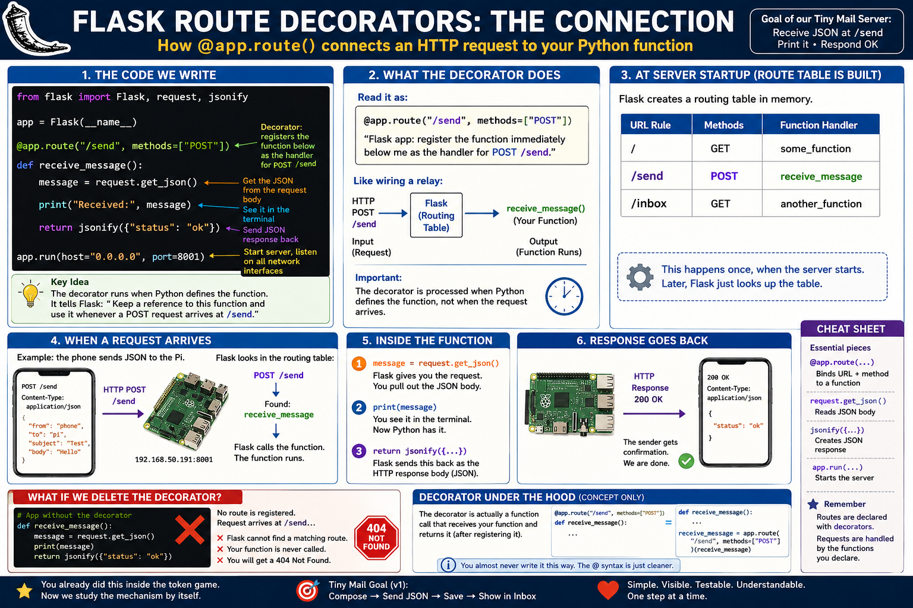

1. Purpose of the Website
The Meadows Housekeeping website gives staff one place to report issues, share suggestions, review schedules, manage work, record progress, and keep supervisors informed.
- Report cleanup and housekeeping issues.
- Make recommendations and process suggestions.
- View schedules and staffing information.
- Track work from intake through completion.
- Preserve notes, timestamps, and communication records.

2. Entering and Navigating the Website
Open the Meadows Housekeeping website and use its navigation to reach the request form, calendar, roster, operational queues, completed work, and documentation.
On a phone, scroll through the page or open the available navigation menu. Each tool has a distinct purpose, but all of them support the same daily housekeeping workflow.

3. Reporting a Cleanup Issue
Use the request form when a room, unit, floor, or other area needs housekeeping attention.
- Select the unit, department, room, or area.
- Describe the condition clearly.
- Identify the type of cleanup needed.
- Include urgency, timing, or safety details when relevant.
- Review the information before submitting.

4. Making a Suggestion or Recommendation
Suggestions are used for ideas that may improve housekeeping operations but are not immediate cleanup tasks.
- Cleaning routine improvements
- Supply or equipment recommendations
- Safety observations
- Scheduling ideas
- Process improvements
Choose the suggestion or recommendation option and provide enough detail for later review.

5. Using the Calendar
The Calendar displays schedules, assignments, meetings, and other housekeeping events.
- Move between daily, weekly, and monthly views.
- Select an event to view its details.
- Check daily staffing before beginning work.
- Review upcoming assignments and schedule changes.
- Confirm which areas are covered.

6. Using the Roster
The Roster shows staff assignments and regular days off. Authorized users can update regular days off when schedules change.
- Review current employee assignments.
- Confirm regular days off.
- Update regular days off when authorized.
- Verify that staffing coverage is accurate.
- Check the update timestamp before relying on the roster.

7. Intake Queue
Intake contains newly submitted cleanup reports and suggestions.
- Read the full submission.
- Confirm the location and details.
- Select Acknowledge.
- The system records receipt and sends an email to the supervisor.
- Sort the item to Work Queue or Recommendations.

8. Work Queue
The Work Queue contains pending and in-progress housekeeping tasks.
- Review the task and location.
- Select Start Work.
- Add notes about conditions, supplies, and progress.
- Document communication with the requesting staff member.
- Select Complete when work is finished.
The view refreshes after each successful update.

9. Recommendations Queue
The Recommendations queue separates improvement ideas from immediate cleanup tasks.
- Review the suggestion or observation.
- Mark the item reviewed.
- Add notes about decisions or follow-up.
- Archive the item when no further action is required.

10. Creating Notes and Updates
Notes provide a clear record of what was found, what was done, and who was informed.
- Condition of the floor or area upon arrival
- Supplies and equipment used
- Work completed
- Obstacles, delays, or repair needs
- Updates given to the staff member who made the request
- Follow-up instructions

11. Documentation Page
The Documentation page is the reference center for the Meadows Housekeeping system. It explains completed work, planned improvements, and how the system is intended to operate.
- Work updates
- Planned work
- Informational slide presentations
- System explanations and development history
The main website is used to perform daily work. The Documentation page explains the system, records progress, and communicates future plans.

12. Cleanup Issue Work Cycle

13. System Benefits